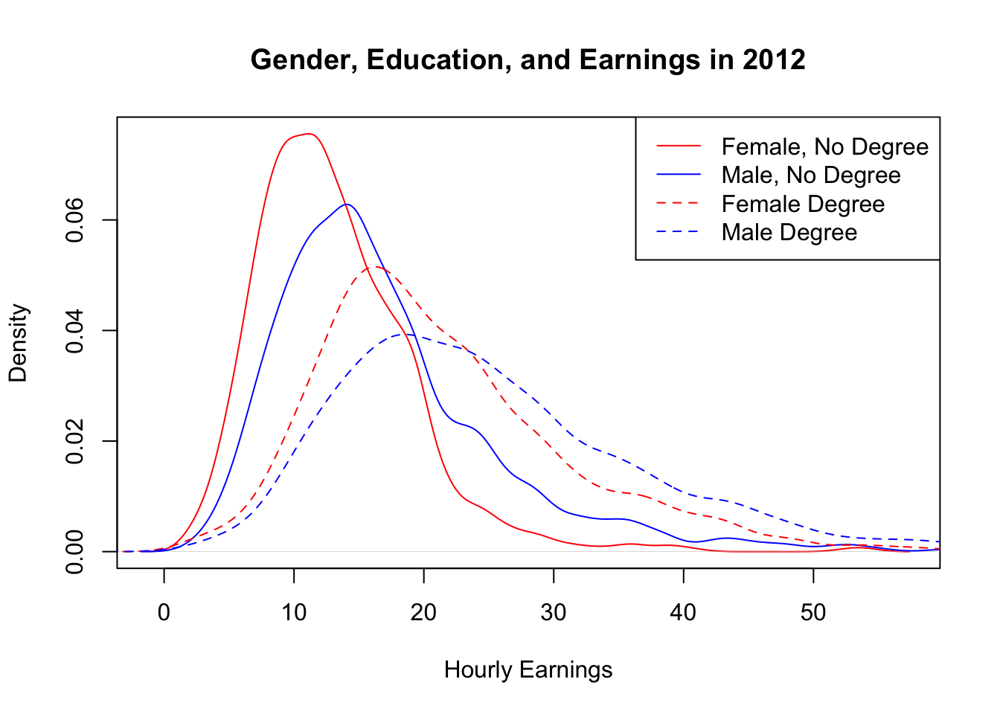

## Set the working directory for the tutorial file
# setwd("/Users/byrned/Dropbox/Teaching/20001/Tutorials/Tutorial3")
#...............
# Note I have not used the line above - use the top menu bar option for
# this under Session - Set Working Directory
## Load Stargazer package for summary statistics and regression tables
library(stargazer)
## Load the dataset from a comma separate value
data=read.csv(file="tute3_cps.csv")Getting Started
Please create a Tutorial3 folder on your computer, and then go to the LMS site for ECOM 20001 and download the following files into the Tutorial3 folder:
tute3.R
tute3_cps.csv
The first file is the R code for tutorial 3, the second file is the .csv file that contains the data set for the tutorial. The data set has the following 5 variables:
| year | year individual was randomly surveyed; either 1992 or 2012 |
| ahe | individual’s average hourly earnings (in real terms, 2012=100) |
| bachelor | equals 1 if individual has a bachelor degree, 0 otherwise |
| female | equals 1 if individual is female, 0 otherwise |
| age | age of the individual at time of survey |
In total, the data set contains this information for 15,052 individuals in the U.S.
The reference for these data is the Current Population Survey (CPS) which is collected by the U.S. Department of Labor Statistics and provides individual-level data on the population, employment, and earnings. It is constructed from randomly sampling the U.S. population. For details, see https://www.census.gov/programs-surveys/cps.html
With the R file and data downloaded into your Tutorial 3 folder, you are ready to proceed with the tutorial.
The first thing to do is set the Working Directory and then load the CSV file into a data frame. Then, load the stargazer package:
Part 1
Question 1
What is the sample mean and standard deviation of ahe (Average Hourly Earnings - AHE) for males and females?
Discuss these numbers and the figure produced in ahe_female.pdf, which reveals what is known as the gender earnings gap.
Provide economic explanation(s) for your results. Recall from Tutorial 2 that an economic explanation focuses on the costs and benefits of a particular behaviour for explaining empirical patterns.
In this example, what are the different economic costs and benefits among males and females in generating household earnings?
Solution
Run the following R code chunk to produce the required descriptive statistics:
Mean and standard deviation of AHE for females
# B. SUBSETS OF DATA
# Suppose we want to just look at ahe for females
# We can get all the observations that corresponds to females with female==1
# data$ahe[data$female==1] is ahe for females
# data$ahe[data$female==0] is ahe for males
## Mean and standard deviation of earnings for females
mean(data$ahe[data$female==1])[1] 17.80898sd(data$ahe[data$female==1])[1] 8.873493Mean and standard deviation of AHE for males
## Mean and standard deviation of earnings for males
mean(data$ahe[data$female==0])[1] 20.57906sd(data$ahe[data$female==0])[1] 10.5533Gender difference in AHE (note this is extra code not in the R script provided)
## calculate the gender difference in AHE
male_ahe <- mean(data$ahe[data$female==0])
fem_ahe <- mean(data$ahe[data$female==1])
diff_ahe <- male_ahe - fem_ahe
diff_ahe[1] 2.77008Mean AHE for males is $20.58, and the standard deviation is $10.55.
Mean AHE for females is $17.81, and the standard deviation is $8.87.
The difference is $20.58-$17.81=$2.77 average earnings per hour
We can also look at the plot of the probability density function.
This gender earnings gap is clear visually in ahe_female.pdf (shown here) by the additional probability mass in the right part of the earnings distribution of males compared to females
plot(density(data$ahe[data$female==1]), col="red",lty=1,xlab="AHE",main="Gender and Earnings")
lines(density(data$ahe[data$female==0]), col="blue",lty=1)
legend("topright", legend=c("Female", "Male"), col=c("red", "blue"), lty=c(1,1))
What are potential economic explanations for this gender earnings gap?
Interpretation
The impact of differential child-rearing on long-run career earnings of females vs males.
This makes it more difficult/costly in the long-run for females to have the same average hourly earnings as males.The “glass ceiling” at work.
Among other explanations, it is often speculated that females on average tend to be less aggressive in negotiating pay with employers than males for equal jobs (all else equal). That is, it can be thought that is potentially more costly for females to negotiate than males in the workplace
Question 2
What is the sample mean and standard deviation of AHE for individuals with and without bachelor degrees?
Discuss these numbers and the figure produced in ahe_bachelor.pdf.
Provide economic explanation(s) for your results.
Solution
Run the Following R chunk given in the R script file:
Mean and standard deviation of AHE for those with a bachelor degree
## Mean and standard deviation of earnings for bachelor degree
mean(data$ahe[data$bachelor==1])[1] 23.34672sd(data$ahe[data$bachelor==1]) [1] 10.71684Mean and standard deviation of AHE for those without a bachelor degree
## Mean and standard deviation of earnings for no bachelor degree
mean(data$ahe[data$bachelor==0])[1] 16.04614sd(data$ahe[data$bachelor==0])[1] 7.855756Difference in AHE for those with and without degrees
diff_ahe_deg <- mean(data$ahe[data$bachelor==1])-mean(data$ahe[data$bachelor==0])
diff_ahe_deg[1] 7.30058The mean AHE for for people with a bachelor degree is $23.35, with a standard deviation of $10.72.
for those with a bachelor degree the mean AHE is $16.05 with a standard deviation of $7.86
The difference is $23.35-$16.05=$7.30 average earnings per hour
The gap in the earnings distributions for people without and with bachelor degrees in ahe_bachelor.pdf (on the right) makes the gap very clear visually
plot(density(data$ahe[data$female==1]), col="red",lty=1,xlab="AHE",main="Gender and Earnings")
lines(density(data$ahe[data$female==0]), col="blue",lty=1)
legend("topright", legend=c("Female", "Male"), col=c("red", "blue"), lty=c(1,1))plot(density(data$ahe[data$bachelor==0]), col="red",lty=1,xlab="AHE",main="Education and Earnings")
lines(density(data$ahe[data$bachelor==1]), col="blue",lty=1)
legend("topright", legend=c("No Bachelor Degree", "Bachelor Degree"), col=c("red", "blue"), lty=c(1,1))What are the potential economic explanations for this education earnings gap?
Solution
Individuals with bachelor degrees are able to signal higher effort levels and worker quality to employers and able to compete for better paying jobs in the labour market.
That is, there is more expected benefit from hiring students with bachelor degrees in the labor market for better paying jobsIndividuals with bachelor degrees have more intrinsic ability on average, and are able to progress more rapidly and higher up the career ladder. That is, it is intrinsically less costly for people with bachelor degrees to progress into higher paying roles in their career.
Question 3
What is the 95% confidence interval (CI) for AHE? Report the results from the following tests:
- H_0: mean(AHE) = 19.5 vs H_1: mean(AHE) != 19.5 ( != means “not equal”)
- H_0: mean(AHE) = 19.5 vs H_1: mean(AHE) > 19.5
- H_0: mean(AHE) = 19.5 vs H_1: mean(AHE) < 19.5
Solution
Using the following code to let R conduct this 2 sided t-test,
t.test(data$ahe,mu=19.5)
One Sample t-test
data: data$ahe
t = -1.2178, df = 15051, p-value = 0.2233
alternative hypothesis: true mean is not equal to 19.5
95 percent confidence interval:
19.24180 19.56031
sample estimates:
mean of x
19.40105 - the t-statistic is \(-1.22\), and \(\lvert-1.22\rvert < 1.96\) (95% critical value for a 2-sided test), s we fail to reject the null hypothesis
Notice that in a 2 sided test the \(\alpha\) is divided by two and so is the p-value (because we have 2 tails).
The decision rule is to reject the null if the \(t \geq\) than \(t_c\) or \(t \leq\) than \(-t_c\) or, using the areas under the curve, add up each respective areas and reject the null if the p-value \(\leq\) \(\mathbf{\alpha}\).
Both approaches yield the same result; if you get a different conclusion using the critical value approach and the p-value approach then a mistake has occurred somewhere.
The next test is one-sided: H_0: mean(AHE) = 19.5 vs H_1: mean(AHE) > 19.5
Note this can also be written as \(H_0: \mu_{AHE} \leq 19.5\) vs \(H_1:\mu_{AHE} > 19.5\)
t.test(data$ahe,mu=19.5,alternative= 'greater')
One Sample t-test
data: data$ahe
t = -1.2178, df = 15051, p-value = 0.8883
alternative hypothesis: true mean is greater than 19.5
95 percent confidence interval:
19.2674 Inf
sample estimates:
mean of x
19.40105 # check by hand using the R code provided
# p-value for one-sided hypothesis test that the mean of ahe is greater than 19.5
ahe_mu=mean(data$ahe) # Sample mean of ahe
ahe_nobs=length(data$ahe) # Number of observations; length() returns the number of obs in ahe
ahe_sd=sd(data$ahe) # Sample standard deviation of ahe
ahe_se=ahe_sd/sqrt(ahe_nobs) # Standard error of the sample mean
t_act=(ahe_mu-19.5)/ahe_se # t-statistic
pvalue1=1-pnorm(t_act) # compute p-value
paste("One-side p-value for greater than (>) alternative:",pvalue1)[1] "One-side p-value for greater than (>) alternative: 0.888352707599048"- the t-statistic is \(-1.22\), and \(-1.22 < 1.65\) (95% critical value for a one-sided test for a greater than test), so fail to reject the null
Note in this case the p-value is \(\left( 1- p\,\text{value}/2 \right)\) from the 2 tailed test above.
This is because the sign of the T test statistic is negative and the alternative hypothesis is that the population mean, \(\mu_{AHE}\) is negative.
This is also shown in the manual calculation of the p-value eg.
pvalue1=1-pnorm(t_act) # compute p-valueNow, we have another one tailed test; H_0: mean(AHE) = 19.5 vs H_1: mean(AHE) < 19.5.
Again this can be written as \(H_0: \mu_{AHE} \geq 19.5\) vs. \(H_1: \mu_{AHE} <19.5\).
t.test(data$ahe,mu=19.5,alternative= 'less')
One Sample t-test
data: data$ahe
t = -1.2178, df = 15051, p-value = 0.1117
alternative hypothesis: true mean is less than 19.5
95 percent confidence interval:
-Inf 19.5347
sample estimates:
mean of x
19.40105 # check by had using the R code provided
# p-value for one-sided hypothesis test that the mean of ahe is greater than 19.5
ahe_mu=mean(data$ahe) # Sample mean of ahe
ahe_nobs=length(data$ahe) # Number of observations; length() returns the number of obs in ahe
ahe_sd=sd(data$ahe) # Sample standard deviation of ahe
ahe_se=ahe_sd/sqrt(ahe_nobs) # Standard error of the sample mean
t_act=(ahe_mu-19.5)/ahe_se # t-statistic
pvalue2=pnorm(t_act) # compute p-value
paste("One-side p-value for less than (<) alternative:",pvalue2)[1] "One-side p-value for less than (<) alternative: 0.111647292400952"- the t-statistic is \(-1.22\), and \(-1.22 > -1.65\) (95% critical value for a one-sided test for a less than test), so fail to reject the null
In this case, the \(H_1: \mu_{AHE}<0\) and the t-statistic is negative so we can just halve the p-value from the 2 tailed test.
This is reflected in the manual calculation for this test e.g.
# p-value for one-sided hypothesis test that the mean of ahe is less than 19.5
t_act=(ahe_mu-19.5)/ahe_se # t-statistic
pvalue2=pnorm(t_act) # compute p-value
paste("One-side p-value for less than (<) alternative:",pvalue2)[1] "One-side p-value for less than (<) alternative: 0.111647292400952"How do the above results tie in to the estimate of the 95% confidence interval for the mean of AHE?
To obtain the 95% CI for the mean of ahe run the following R chunk
# B. COMPUTING CIs BY HAND, 90%, 95%, 99% CIs
# Compute the 95% CI for AHE by hand (example)
ahe_mu=mean(data$ahe) # Sample mean of ahe
ahe_nobs=length(data$ahe) # Number of observations; length() returns the number of obs in ahe
ahe_sd=sd(data$ahe) # Sample standard deviation of ahe
ahe_se=ahe_sd/sqrt(ahe_nobs) # Standard error of the sample mean
ahe_CI95_low=ahe_mu-1.96*ahe_se # Lower bound of the 95% CI
ahe_CI95_high=ahe_mu+1.96*ahe_se # Upper bound of the 95% CI
# Output CI results using 'paste' command for printing words and numbers on the same line
paste("95% CI Lower Bound:",ahe_CI95_low)[1] "95% CI Lower Bound: 19.241806075171"paste("95% CI Upper Bound:",ahe_CI95_high)[1] "95% CI Upper Bound: 19.5603017831867"easier way
# Re-run t.test(data$ahe,mu=10) code to see 95% CI
# Confirm it is the same as what we computed by hand at [19.24,19.56]
t.test(data$ahe,mu=0)
One Sample t-test
data: data$ahe
t = 238.79, df = 15051, p-value < 2.2e-16
alternative hypothesis: true mean is not equal to 0
95 percent confidence interval:
19.24180 19.56031
sample estimates:
mean of x
19.40105 Using either approach the 95% CI for \(\mu_{AHE}\) is \(\left[ 19.24,19.56 \right]\).
This means, in repeated samples that \(\mu_{AHE}\) would fall in similarly constructed intervals 95% of the time.
Since we did not reject the null hypothesis at the 5% level that \(\mu_{AHE}=19.5\) this is consistent with the interval estimate (e.g. if the null was rejected then the CI would not include the value tested in the null, in this case, 19.5).
Question 4
Discuss the difference in mean AHE for 2012 from a two-sample T-test for the gender earnings gap among males and females without bachelor degrees:
- H_0: mean(AHE_Female_2012_NoBach) = mean(AHE_Male_2012_NoBach) vs
H_1: mean(AHE_Female_2012_NoBach) != mean(AHE_Male_2012_NoBach
So we are testing for example:
Let \(X\) = the mean of AHE for females without a bachelor degree in 2012;
and \(Y\) = the mean of AHE for females without a bachelor degree in 2012;
\(H_0: \mu_X=\mu_Y\) vs. \(H_1:\mu_X \neq\mu_Y\) or
\(H_0: \mu_X-\mu_Y=0\) vs. \(H_1:\mu_X -\mu_Y \neq 0\)
Solution
Run the following chunk provided in the R Script file provided
## Test difference of means in ahe for male and female without bachelor in 2012
# Gender wage gap in 2012 among people without bachelor degree
mean(data$ahe[data$female==1 & data$year==2012 & data$bachelor==0])[1] 13.11905mean(data$ahe[data$female==0 & data$year==2012 & data$bachelor==0])[1] 17.04357diff1=mean(data$ahe[data$female==1 & data$year==2012 & data$bachelor==0])-mean(data$ahe[data$female==0 & data$year==2012 & data$bachelor==0])
paste("Difference in Mean Earnings in 2012 Between Males and Females without Bachelor Degrees:",diff1)[1] "Difference in Mean Earnings in 2012 Between Males and Females without Bachelor Degrees: -3.92452545214108"t.test(data$ahe[data$female==1 & data$year==2012 & data$bachelor==0],data$ahe[data$female==0 & data$year==2012 & data$bachelor==0])
Welch Two Sample t-test
data: data$ahe[data$female == 1 & data$year == 2012 & data$bachelor == 0] and data$ahe[data$female == 0 & data$year == 2012 & data$bachelor == 0]
t = -15.361, df = 3269.9, p-value < 2.2e-16
alternative hypothesis: true difference in means is not equal to 0
95 percent confidence interval:
-4.425451 -3.423600
sample estimates:
mean of x mean of y
13.11905 17.04357 Difference in sample means is $13.11-$17.04=-$3.93
the t-statistic for the test of difference in means is \(-15.361\), and \(\lvert-15.361 \rvert>1.96\) so reject the null at the 5% level that the difference of means equals 0.
Does this result match up with the CI estimate?
Recall, if we don’t reject the null then the value we are testing under the null e.g. in this case \(H_0: \mu_X-\mu_Y=0\) vs. \(H_1:\mu_X -\mu_Y \neq 0\) then the value in the null should be in the CI.
Run
## Test difference of means in ahe for male and female without bachelor in 2012
# Gender wage gap in 2012 among people without bachelor degree
mean(data$ahe[data$female==1 & data$year==2012 & data$bachelor==0])[1] 13.11905mean(data$ahe[data$female==0 & data$year==2012 & data$bachelor==0])[1] 17.04357diff1=mean(data$ahe[data$female==1 & data$year==2012 & data$bachelor==0])-mean(data$ahe[data$female==0 & data$year==2012 & data$bachelor==0])
paste("Difference in Mean Earnings in 2012 Between Males and Females without Bachelor Degrees:",diff1)[1] "Difference in Mean Earnings in 2012 Between Males and Females without Bachelor Degrees: -3.92452545214108"t.test(data$ahe[data$female==1 & data$year==2012 & data$bachelor==0],data$ahe[data$female==0 & data$year==2012 & data$bachelor==0])
Welch Two Sample t-test
data: data$ahe[data$female == 1 & data$year == 2012 & data$bachelor == 0] and data$ahe[data$female == 0 & data$year == 2012 & data$bachelor == 0]
t = -15.361, df = 3269.9, p-value < 2.2e-16
alternative hypothesis: true difference in means is not equal to 0
95 percent confidence interval:
-4.425451 -3.423600
sample estimates:
mean of x mean of y
13.11905 17.04357 Looking at these results the 95% CI is \(\left[-4.42, -3.424 \right]\) which does not include 0 so the results of the hypothesis test and the interpretation of the CI for this two sample test line up.
Question 5
Now discuss the difference in mean AHE for 2012 from a two-sample t-test for the gender earnings gap among males and females with bachelor degrees:
- H0: mean(AHE_Female_2012_Bach) = mean(AHE_Male_2012_Bach) vs
H1: mean(AHE_Female_2012_Bach) != mean(AHE_Male_2012_Bach)
Solution
Run the following R chunk
## Test difference of means in ahe for male and female with bachelor in 2012
# Gender wage gap in 2012 among people with bachelor degree
mean(data$ahe[data$female==1 & data$year==2012 & data$bachelor==1])[1] 21.50238mean(data$ahe[data$female==0 & data$year==2012 & data$bachelor==1])[1] 25.29886diff2=mean(data$ahe[data$female==1 & data$year==2012 & data$bachelor==1])-mean(data$ahe[data$female==0 & data$year==2012 & data$bachelor==1])
paste("Difference in Mean Earnings in 2012 Between Males and Females with Bachelor Degrees:",diff2)[1] "Difference in Mean Earnings in 2012 Between Males and Females with Bachelor Degrees: -3.79648087004387"t.test(data$ahe[data$female==1 & data$year==2012 & data$bachelor==1],data$ahe[data$female==0 & data$year==2012 & data$bachelor==1])
Welch Two Sample t-test
data: data$ahe[data$female == 1 & data$year == 2012 & data$bachelor == 1] and data$ahe[data$female == 0 & data$year == 2012 & data$bachelor == 1]
t = -10.778, df = 3851.2, p-value < 2.2e-16
alternative hypothesis: true difference in means is not equal to 0
95 percent confidence interval:
-4.487066 -3.105896
sample estimates:
mean of x mean of y
21.50238 25.29886 Difference in sample means is $21.50-$25.30=-$3.80
t-statistic for the test of difference in means is \(-10.79\), and \(\lvert-10.79 \rvert>1.96\) so reject the null at the 5% level that the difference of means equals 0.
the 95% CI is \(\vert -\$4.49,-\$3.39\rvert\) which does not contain \(0\) so matched the result of the hypothesis test.
So we see our estimated gender earnings gap falls from $3.93 to $3.80 when we go from people without bachelor degrees to people with bachelor degrees.
In short education appears to make the gender earnings gap smaller.
The graph in ahe_female_bachelor_2012.pdf , see below, has a smaller gap in the means among males and females with bachelor degrees.
Both the shifts in the distributions of earnings without and with bachelor degrees for males and females again highlight the importance of education for earnings.
plot(density(data$ahe[data$female==1 & data$year==2012 & data$bachelor==0]), col="red",lty=1,main="Gender, Education, and Earnings in 2012", xlab="AHE")
lines(density(data$ahe[data$female==0 & data$year==2012 & data$bachelor==0]), col="blue",lty=1)
lines(density(data$ahe[data$female==1 & data$year==2012 & data$bachelor==1]), col="red",lty=2)
lines(density(data$ahe[data$female==0 & data$year==2012 & data$bachelor==1]), col="blue",lty=2)
legend("topright", legend=c("Female, No Degree", "Male, No Degree", "Female Degree", "Male Degree"),
col=c("red","blue","red","blue"), lty=c(1,1,2,2))
One possible economic explanation for this is among women with bachelors degree, there is a smaller propensity to have as many children, and hence less disruption in their careers due to children, which would mean a smaller gender earnings gap among people with bachelors degrees.
Part 2
Note: Part 2 of this tutorial contains extra practice exercises and will potentially only be partially covered in the tutorial, depending on time remaining. Solutions will be provided for students to work through and follow-up on in consultations
Question 1
Suppose you collected AHE from a random sample n=5,000 of Victorians.
You compute the sample mean of $28.25 and sample standard deviation of $10.66.
- Conduct a two-sided hypothesis test of the null that the population mean is $28 using both the p-value and critical-value approaches to hypothesis testing.
Use a 5% level of significance for your test.
Solution
## Q 1 (a)
mean_a <- 28 # sample mean
mu_a <- 28.25 # population mean
sd_a <- 10.66 # standard deviation
n_a <- 5000 # sample size
se_a <- sd_a/sqrt(n_a) # standard error
t_a <- (mean_a-mu_a)/se_a # t statistic
tcl_a <- qnorm(0.025) # lower critical value (-tc)
tcu_a <- qnorm(0.975) # upper critical value (+tc)
tca <- c(tcl_a,tcu_a) # put the two tc's together
abs_t_a <- abs(t_a) # absolute value of the t test statistic
pv_a <- 2*pnorm(t_a) # p value
#### print out required results
t_a[1] -1.658318abs_t_a[1] 1.658318tca[1] -1.959964 1.959964pv_a[1] 0.0972533\(\lvert t_{act} \rvert=1.66<1.96\), so fail to reject null at 5% level.
The p-value is computed as 2 x Phi(-|1.66|)=0.097 > 0.05, which equivalently means fail to reject null at the 5% level (where Phi() is the cumulative density function \(\left( \Phi \right)\) of the N(0,1) distribution).
- Construct a 95% CI for the population mean
Solution
CI_l_b <- mean_a + (tcl_a*se_a) # lower limit
CI_u_b <- mean_a + (tcu_a*se_a) # upper limit
CI_b <- c(CI_l_b,CI_u_b) # 95 % CI
# print the CI (note difference to solutions will be rounding error)
CI_b[1] 27.70453 28.29547- Report the p-value for the two-sided hypothesis test of the null that the population mean is $28, as well as the 95% CI for the following sample sizes:
n=2,500
n=5,000
n=10,000
n=20,000
Does the p-value for the test go up or down as the sample size rises?
Does the 95% CI expand or shrink as the sample size rises?
Explain the intuition for your findings regarding sample size, p-values, and confidence interval width.
Solution
to calculate the p-values
t_d_1=(mean_a-mu_a)/(sd_a/sqrt(2500))
t_d_2=(mean_a-mu_a)/(sd_a/sqrt(5000))
t_d_3=(mean_a-mu_a)/(sd_a/sqrt(10000))
t_d_4=(mean_a-mu_a)/(sd_a/sqrt(20000))
pv_d_1 <- 2*pnorm(t_d_1)
pv_d_2 <- 2*pnorm(t_d_2)
pv_d_3 <- 2*pnorm(t_d_3)
pv_d_4 <- 2*pnorm(t_d_4)
pvalues_d<- c(pv_d_1,pv_d_2,pv_d_3,pv_d_4)
pvalues_d[1] 0.2409530880 0.0972533044 0.0190160717 0.0009110825So, we see the p-values shrink as the sample size grows.
Intuitively, as our estimate if the sample mean gets more precise with larger samples (which reduces the standard error of the man), we are increasingly able to reject even small differences between the sample mean and the hypothesized value of the sample mean.
to calculate the CI’s
CI_l_b1 <- mean_a + tcl_a*(sd_a/sqrt(2500)) # lower limit
CI_u_b1 <- mean_a + tcu_a*(sd_a/sqrt(2500)) # upper limit
CI_b1 <- c(CI_l_b1,CI_u_b1) # 95 % CI n=2500
CI_l_b2 <- mean_a + tcl_a*(sd_a/sqrt(5000)) # lower limit
CI_u_b2 <- mean_a + tcu_a*(sd_a/sqrt(5000)) # upper limit
CI_b2 <- c(CI_l_b2,CI_u_b2) # 95 % CI n=5000
CI_l_b3 <- mean_a + tcl_a*(sd_a/sqrt(10000)) # lower limit
CI_u_b3 <- mean_a + tcu_a*(sd_a/sqrt(10000)) # upper limit
CI_b3 <- c(CI_l_b3,CI_u_b3) # 95 % CI n=10,000
CI_l_b4 <- mean_a + tcl_a*(sd_a/sqrt(20000)) # lower limit
CI_u_b4 <- mean_a + tcu_a*(sd_a/sqrt(20000)) # upper limit
CI_b4 <- c(CI_l_b4,CI_u_b4) # 95 % CI n=20,000
# print the CI (note difference to solutions will be rounding error)
CI_b1[1] 27.58214 28.41786CI_b2[1] 27.70453 28.29547CI_b3[1] 27.79107 28.20893CI_b3[1] 27.79107 28.20893# CI widths
CI_w1 <- CI_u_b1-CI_l_b1
CI_w2 <- CI_u_b2-CI_l_b2
CI_w3 <- CI_u_b3-CI_l_b3
CI_w4 <- CI_u_b4-CI_l_b4
CI_w_summ <- c(CI_w1,CI_w2,CI_w3,CI_w4)The CI width shrinks as the sample size goes up for the same reason (see the output below).
# print summary of CI width
CI_w_summ[1] 0.8357286 0.5909494 0.4178643 0.2954747We maintain the same degree of confidence in the location of the population mean (95%) for a smaller interval because we have a more precise estimate of the sample mean with larger sample sizes.
That is, larger samples yield tighter CI’s in which the population mean is likely to be.
Question 2
Return to your original sample of n=5,000 Victorians with sample mean AHE of $28.25 and sample standard deviation of $10.66.
Suppose you also randomly sampled m=3,000 individuals from NSW and obtained a sample mean AHE of $30.88 and sample standard deviation of $11.22.
- Construct a 95% CI for the population mean of AHE for the individuals from NSW.
Is it wider or more narrow than the 95% CI for AHE from Victoria? Explain.
Use the following code
n_NSW=3000
mean_s_NSW=30.88
sd_s_NSW=11.22
se_NSW=sd_s_NSW/sqrt(n_NSW)
t_c=qt(0.975,n_NSW-1)
CI95_low_NSW = mean_s_NSW - t_c*se_NSW
CI95_high_NSW = mean_s_NSW + t_c*se_NSW# 95% CI
paste("95% CI Lower Bound:",CI95_low_NSW)[1] "95% CI Lower Bound: 30.4783427306392"paste("95% CI Upper Bound:",CI95_high_NSW)[1] "95% CI Upper Bound: 31.2816572693608"width_NSW=CI95_high_NSW-CI95_low_NSW
paste("CI width:",width_NSW)[1] "CI width: 0.803314538721594"The 95% CI for the population mean of AHE for the individuals from NSW turns out to be \([30.48,31.28]\) with a width of \(0.80\).
We have a wider CI for NSW than VIC because:
the sample size of VIC is larger, and
the sample standard deviation of the data is smaller for VIC.
This implies a more precise estimate of the sample mean for VIC and a tighter CI around it.
- Conduct a two-sample t-test of the null that the difference in mean AHE for individuals in Victoria and NSW is 0.
Conduct the test using both the p-value and critical-value approaches. Use a 5% level of significance for your test.
Solution
n_VIC = 5000
n_NSW = 3000
mean_s_VIC <- 28.25
mean_S_NSW <- 30.88
sd_s_VIC <- 10.66
sd_s_NSW <- 11.22
mean_s_diff <- mean_s_VIC - mean_s_NSW
se_s_diff = sqrt(sd_s_VIC^2/n_VIC + sd_s_NSW^2/n_NSW)
t_s_diff <- mean_s_diff/se_s_diff
p_val_diff = 2*pnorm(t_s_diff)print(t_s_diff)[1] -10.3404print(p_val_diff)[1] 4.625908e-25The two-sample t-test yields a t-statistic of \(-10.34\), with \(\lvert -10.34 \rvert > 1.96\) implying we reject the null that mean AHE in VIC and NSW are equal.
The p-value for the test is less than 0.000001.
- Report the 95% CI for the difference in the mean AHE between Victoria and NSW.
Solution
The 95% CI for the difference in means is \([-3.12, -2.13]\).
Question 3
Suppose you have a random sample of data with a mean m, and you conduct the following hypothesis test:
\(\hspace{2cm} \text{H0: m = 10 vs H1: m != 10}\) (!= means “not equal”)
Having performed the test, you obtain a p-value of 0.07.
- Does the 90% CI for the population mean contain m = 10? Explain.
Solution
The 90% CI does not contain m=10.
With a p-value of 0.07, you would reject the null hypothesis at the 10% level.
That is, m=10 does not sit within the region of null values that would not be rejected at the alpha=10% level, which is what defines a (1-alpha) = 90% confidence interval.
- With the information provided in the question, can you determine if m = 8 is contained in the 90% CI? Explain.
Solution
You cannot determine if m=8 lies within the 90% CI with the data provided.
By knowing the p-value of 0.07, you can compute the magnitude of the t-statistic for the test from the CDF of the N(0,1) distribution.
However, even if you know the t-statistic, you will not know what is in the numerator and the denominator, which would be needed to figure out the sample mean and standard error of the mean, which in turn is required to compute a 90% CI.
So here is my take on this question:
We discussed today:
the test statistic (for one mean) is \(t = \dfrac{\bar{X} - \mu_X}{se_{\mu_X}}\)
the p-value of the area under the curve associated with the t test statistic
using the p-value approach, reject the \(H_0\) if the p-value \(<\) the alpha
we discussed that if you reject the \(H_0\) then the value tested under the null (i.e. in this case m=8) would not lie within the relevant CI
So for part (a) since the null is rejected then \(H_0: m=8\) would not be in the interval (via point(iv) above).
p_value_qn_d <-0.07
alpha_qn_d <- 0.10
partd_t_tl <- qnorm(p_value_qn_d/2)
partd_t_tu <- qnorm(1- p_value_qn_d/2)
partd_t <- c(partd_t_tl,partd_t_tu)
partd_t_tcl <- qnorm(alpha_qn_d/2)
partd_t_tcu <- qnorm(1-alpha_qn_d/2)partd_tc <- c(partd_t_tcl,partd_t_tcu)
paste("Upper and Lower critical values:",partd_tc)[1] "Upper and Lower critical values: -1.64485362695147"
[2] "Upper and Lower critical values: 1.64485362695147" paste("2 sided t stat:",partd_t)[1] "2 sided t stat: -1.8119106729526" "2 sided t stat: 1.8119106729526" But, we have no idea what \(\bar{X}\) nor \(se_{\mu_X}\) is.
In part (b) we are not told what the p-value is for the results of testing \(H_0: m=8\).
Remember the p-value of 0.07 relates to the testing \(H_0: m=10\) and we are not told what the p-value of this test is. Since we still don’t know that \(\bar{X}\) nor \(se_{\mu_X}\) is from part (a) there is no way to construct the 95% CI in (b).
Recall, the CI estimator for a parameter \(\mu_X\) is \(\bar{X} \pm se_{\mu_X} \times t_c\) .